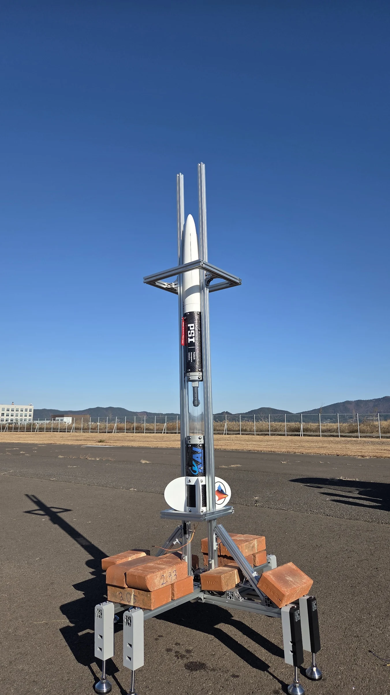
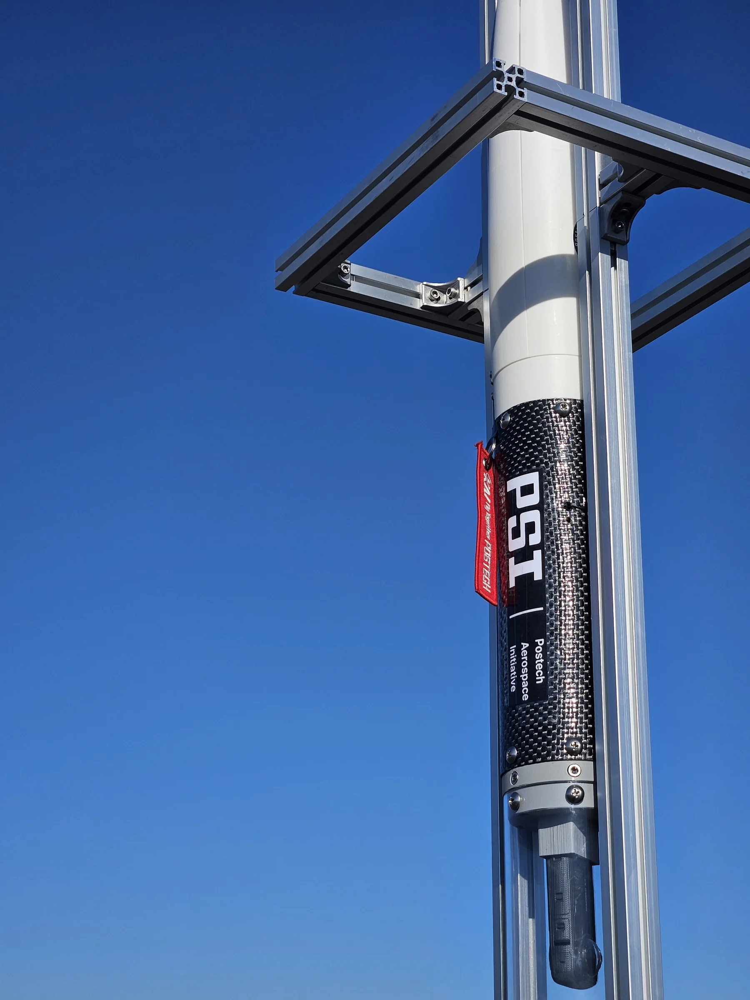
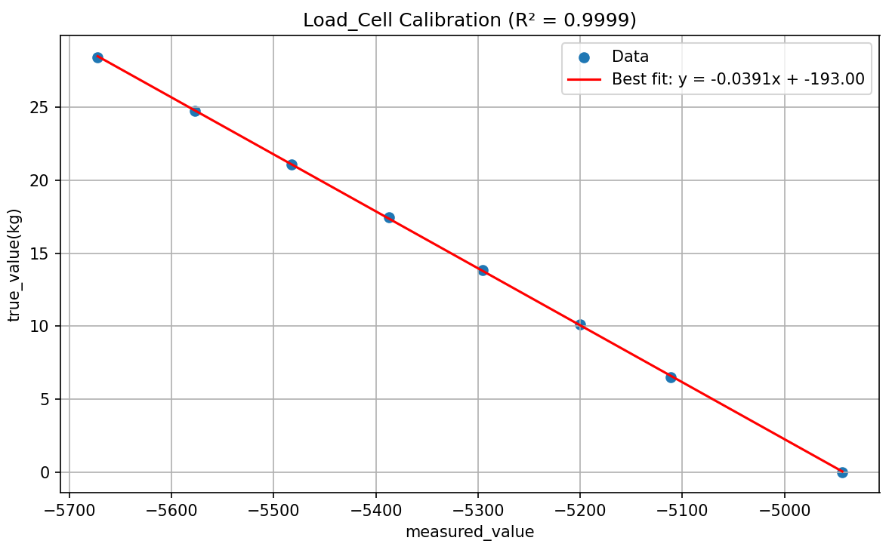

{kind=link}
압력 이상에는 단일 샘플의 급락과 추력이 거의 없는 이후 구간의 압력이 포함됩니다. 원인은 확인되지 않았으며 최대 추력은 비행체 성능 규격이 아닙니다.
PSI / 포스텍 항공우주연구회
PSLV.
학생이 만드는
발사체
영상을 불러오지 못했습니다. 영상 파일을 직접 열어 보세요. 이 영상 파일 열기

현장에서 촬영한 로켓의 전체 모습.
여러 시스템이 만나
하나의 비행체로
사진 속 비행체를 만드는 공학적 질문을 살펴보세요. 구조, 측정, 회수 시스템은 비행 내내 함께 작동해야 합니다.

비행체를 연결하는 구조
기체 구조는 추진 장치, 비행 전자장치, 회수 장치를 물리적으로 연결합니다. PSI는 탄소섬유 동체와 단 분리 과정의 동적 안정성을 연구해 왔습니다. 이 사진은 실제 외부 하드웨어이며 내부 구조를 표현한 단면도가 아닙니다.
측정에서 비행 상태 추정으로
현재 Arduino Portenta H7 소프트웨어는 M7의 센서 처리·비행 판단과 M4의 SD 기록·XBee 원격 측정을 분리합니다. UKF는 가속도와 기압 고도로 수직 운동을 추정하고 GNSS는 별도의 위치 기록을 제공합니다. 통합 Python 지상국에서 실시간 데이터를 확인하거나 저장된 로그를 재생할 수 있습니다.
비행 소프트웨어 살펴보기
돌아오는 것까지가 비행
회수는 독립적인 공학 과제입니다. 2025년 12월 PSLV-II 공개 기록에는 360도 탑재 영상 촬영과 함께 낙하산 임무 완료가 기록되어 있습니다. 이전 비행의 결과도 프로젝트의 학습 기록으로 남습니다.
12월 비행 영상 보기PSLV를 이루는 시스템
비행 전자장치센서 수집, 수직 상태 추정, 기체 내 기록과 지상국.
센서의 측정에서
비행 기록까지
비행 컴퓨터와 지상국은 하나의 기록 경로를 이룹니다. 측정값을 수집하고 수직 운동과 비행 상태를 판단한 뒤, 그 과정을 저장하고 검토합니다.
팀장 Jaeyoung Park
비행 판단과
기록 작업의 분리
현재 Portenta H7 구현은 M7과 M4에 역할을 나눕니다. M7은 센서 데이터를 읽고 상태를 확인하며, 수직 운동 추정과 비행 상태·회수 장치 구동 판단을 수행합니다. 주 반복문은 100 Hz로 설정되어 있습니다.
별도 전송 스레드가 측정값과 상태 정보를 프레임·체크섬을 갖춘 코어 간 메시지로 보냅니다. M4는 microSD 저장과 XBee 원격 측정을 담당하며 무선 전송 경로는 25 Hz로 설정되어 있습니다. 대기열과 누락 횟수로 지연·기록 손실을 확인하면서 전송·저장 작업을 비행 판단 루프와 분리합니다.
이 수치는 소프트웨어 설정값이며 전체 시스템의 실측 성능을 보장하지 않습니다. 인용한 버전의 구조를 설명하며, 과거 비행만으로 현재의 모든 기능이 그 임무에 탑재되었다고 확인할 수는 없습니다.
- 입력
센서
EBIMU-9DOFV6 IMU
BMP390 기압 센서
NEO-M9N GNSS측정값 → M7
- 비행 연산
M7
센서 수집 · 추정 · 비행 판단
수직 UKF: 가속도와 기압 고도. GNSS는 별도 기록으로 유지합니다.
측정값과 상태 → IPC
- 코어 간 전달
IPC
프레임 메시지, 체크섬과 대기열
텔레메트리 프레임 → M4
- 저장과 무선 전송
M4
microSD → 기체 내부 CSV와 텍스트 로그
XBee → 지상에서 수신한 기록
측정값과 추정값은
같지 않습니다
IMU는 자세·가속도·각속도를 제공합니다. BMP390의 기압 고도는 시작 시 설정한 압력을 기준으로 합니다. 무향 칼만 필터(UKF)는 수직 가속도와 기압 고도로 수직 운동을 추정합니다. 새로운 기압 측정값이 들어올 때 명목상 약 50 Hz로 갱신하며, 주 반복문이 실행되었다고 이전 값을 새 측정값으로 다시 처리하지 않습니다.
GNSS 위치와 고도는 기록과 회수 위치 확인을 위한 별도의 정보입니다. 인용한 버전에서 수직 상태 UKF나 비행 상태 판단의 입력은 아닙니다. 기압 고도, GNSS 고도, 필터 추정 고도와 예측 최고 고도는 의미와 기준이 서로 다릅니다.
숫자와 함께 남기는 갱신 상태
센서 검사는 장치의 응답과 새로운 유효 측정값을 구분합니다. 새 샘플이 끊겨도 마지막 값은 화면에 남을 수 있습니다. 센서 상태, 기준 기압 상태, 경고와 비행 상태 이벤트는 이를 해석하기 위한 단서이며 비행 준비 완료 인증이 아닙니다.
기체 기록과 수신 기록은
서로 다른 정보를 남깁니다
기체 내부에는 세션별 텔레메트리 CSV와 보조 텍스트 로그가 생성됩니다. 수치 기록에는 측정·추정값, 비행 상태와 센서 상태가 남고, 텍스트 기록에는 초기화·교정·상태 변화 메시지가 남습니다. M7의 임무 시간과 M4 자체 메시지의 시간 표시는 구분합니다.
지상국에는 무선으로 실제 도착한 데이터가 기록됩니다. 무선 연결이 끊기면 기체에 저장된 샘플이 지상 기록에는 없을 수 있습니다. 기체 내부 기록도 유한한 버퍼, 저장 장치 오류와 쓰기 중단의 영향을 받습니다. 누락 횟수와 경고로 이를 검토하며 어느 경로도 무손실이라고 단정하지 않습니다.
구현 참고 자료
기록·원격 측정 구현비행 후의 질문을
한 화면에서
통합 Python 지상국은 3D 자세, 위치 이력, 비행 통계와 시간 정보가 있는 텔레메트리·시스템 메시지를 함께 보여줍니다. 가속도, 각속도, 고도, 수직 속도와 예측 최고 고도 그래프를 선택할 수 있으며 기본 화면에는 가속도와 고도가 표시됩니다. 기압·GNSS·칼만 고도 곡선을 비교하고 위치 이력은 격자나 미리 준비한 오프라인 지도에서 살펴봅니다.
지원 형식의 CSV·텍스트 로그는 실시간 직렬 연결 없이 검토할 수 있습니다. 일시 정지, 탐색과 1·2·5·10·50배속 재생을 제공하며 표시 이력과 통계를 다시 구성합니다. IMU와 기압 센서는 최신·지연·수신 불가 상태를 구분합니다. GNSS의 “ALIVE”는 수신 데이터 상태이며 유효한 위치 확정을 보장하지 않습니다.
통계창의 최대 고도는 수신한 필터 추정 고도의 최대값이며, 예측 최고 고도는 기체에서 계산한 현재 예측값입니다. 둘 다 독립적인 실측 비행 성과와 같지 않습니다. 아래 웹 기록 재생은 전체 데스크톱 지상국이 아닌 작은 발췌 예시입니다.
공개 로그 발췌 기록
수신된 비행 기록을 따라가 보세요
29.38초 구간에서 선택한 수신 샘플 343개입니다. 시간은 이 발췌 구간의 시작을 기준으로 하며, 이륙 시점을 뜻하지 않습니다. 실시간 화면이 아닌 발췌 기록이며, 비행 날짜와 기체는 확인되지 않았습니다. 이 사이트의 영상과 동기화한 데이터가 아닙니다.
경과 시간0.00 s
추정 고도1.305 m
수직 속도0.463 m/s
기록 상태PRELAUNCH
기록 그래프와 요약입니다.
발췌 기록의 요약과 한계 보기
| 샘플 | s | m | m/s | 상태 |
|---|---|---|---|---|
| 시작 | 0.00 | 1.305 | 0.463 | PRELAUNCH |
| 수신 최대 고도 | 11.44 | 186.632 | 3.579 | LAUNCH |
| 끝 | 29.38 | 45.841 | -6.764 | DEPLOY |
186.632미터는 이 발췌 기록에서 수신된 고도 추정값의 최대치이며 기체 성능 제원이 아닙니다. 최종 상태는 DEPLOY로, 이 기록만으로 착륙이나 회수 완료를 확인할 수 없습니다.
동체와 구조동체는 추진 장치, 전자장치와 회수 하드웨어를 연결합니다.
PSLV는 학생이 만든 사운딩 로켓에 동체, 비행 전자장치와 회수 하드웨어를 연결합니다. 위의 기체 사진에서 실제 하드웨어를 살펴볼 수 있습니다.
추진과 TMS고체 모터 개발, 추력·압력 계측과 네 차례의 공개 시험.
센서의 신호에서
시험 결과까지
추력 측정 시스템은 지상 시험의 데이터 수집, 교정과 오프라인 분석을 연결합니다. 기록한 신호를 힘과 압력으로 변환하는 과정과 가정을 날짜별 결과와 함께 살펴봅니다.
팀장 Jaeyoung Park
두 신호를
하나의 기록으로
Arduino Nano는 두 ADS1115 변환기를 통해 로드셀과 압력 채널을 읽고 측정값을 교대로 microSD에 저장합니다. 수집 코드는 명목상 초당 320쌍을 기록하도록 설정되어 있습니다. 각 변환기의 860 SPS 설정은 저장되는 샘플 쌍의 속도와 다릅니다.
저장되는 값은 각 채널에서 최근 읽은 값이며 힘과 압력의 완전한 동시 측정을 보장하지 않습니다. 분석 시간축은 개별 샘플 타임스탬프가 아니라 가정한 샘플링 속도로 재구성합니다. 분석에 필요한 기준이지만 실제 수집 시각을 독립적으로 검증한 결과는 아닙니다.
구현 참고 자료
데이터 수집 구현교정값에서
추력으로
알려진 하중을 기준으로 교정
교정 도구는 알려진 누적 하중에서 측정값을 평균하고 직선을 맞춰 기울기·오프셋·R²를 구합니다. 아래 예시의 기준 하중 축은 뉴턴이 아닌 kg입니다. 잘 맞는 직선은 해당 교정 데이터의 특성이며 전체 계측 불확도를 나타내거나 모든 시험에 같은 교정식을 적용할 근거가 되지는 않습니다.
구현 참고 자료
교정 구현
요약 수치 뒤의
신호를 남깁니다
단위 변환
교정식으로 측정값을 힘과 압력으로 바꿉니다. 내보낸 raw_force_N 필드는 이미 뉴턴으로 변환된 값이며 ADC 원시 카운트가 아닙니다.
기준선 설정
수평 기준선 옵션은 일정한 오프셋을 뺍니다. 게이지 압력은 초기 기준선을 사용하며, 시간에 따라 변하는 열 드리프트를 보상하는 방식은 아닙니다.
오프라인 필터링
버터워스 저역통과 필터를 정방향·역방향으로 적용한 영위상 오프라인 결과입니다. 실시간 인과 필터가 아니며 필터링 전·후 힘과 압력을 비교할 수 있도록 남깁니다.
분석 구간과 함께 보고
처리된 힘 신호에서 알고리즘으로 이벤트 구간을 선택합니다. 최대 추력·지속 시간·힘을 적분한 충격량·평균 추력은 해당 구간과 분석 설정의 영향을 받습니다. 비추력에는 추진제 질량이 추가로 필요하며 힘 곡선만으로 추정하지 않습니다.
2026년의
네 차례 시험
공개 결과 포털에는 2026년 네 차례의 시험 기록, 비교 그래프와 다운로드 데이터가 있습니다. 아래 값은 보고된 시험 결과이며 서로 바꿔 쓸 수 있는 규격이 아닙니다. 실험 조건·분석 구간·계측 노트를 함께 확인해야 합니다.
공개 측정값
| 날짜 | 최대 추력 | 총 임펄스 | 연소 시간 | 최대 압력 | 원자료 |
|---|---|---|---|---|---|
| 2026-07-16 | 323.79 N | 484.66 N s | 2331.2 ms | 38.018 bar | TSV · 기록 |
| 2026-05-28 | 174.19 N | 366.33 N s | 2818.7 ms | 42.496 bar | TSV · 기록 |
| 2026-04-08 | 203.00 N | 387.07 N s | 2687.5 ms | 44.304 bar | TSV · 기록 |
| 2026-04-03 | 174.42 N | 368.74 N s | 3287.5 ms | 39.241 bar | TSV · 기록 |
보고된 측정값은 시험 조건과 처리 방법에 따라 달라집니다. 아래에서 원시·보정·필터 신호를 비교할 수 있으며 웹사이트는 필터링이나 교정을 다시 계산하지 않습니다.
공력과 제어안정성 모델링과 진행 중인 테일핀 연구.
현재 테일핀 연구는 독립된 네 개의 제어면을 탐구합니다. 검증은 앞으로의 과제입니다.
현재 연구 보기회수낙하산 하드웨어와 2025년 12월 비행 기록.
2025년 12월 PSLV-II 공개 기록에는 낙하산 임무 완료와 360도 탑재 영상 촬영이 기록되어 있습니다. 이전 비행의 회수 결과는 별도로 구분합니다.
12월 원본 비행 기록비행 기록
PSI 공개 연혁에서 확인한 세 차례의 비행 기록입니다. 발사, 회수, 연구 성과는 각각 다른 결과를 설명합니다.
PSLV-I
PSLV-I
발사와 에비오닉스 시험
고도화한 에비오닉스를 탑재한 PSLV-I이 NURA 발사대회에서 비행했습니다. 발사와 회수 결과는 구분합니다. 관련 원고에는 이 비행의 회수가 성공하지 못한 것으로 기록되어 있습니다.
원본 기록 보기PSLV-II